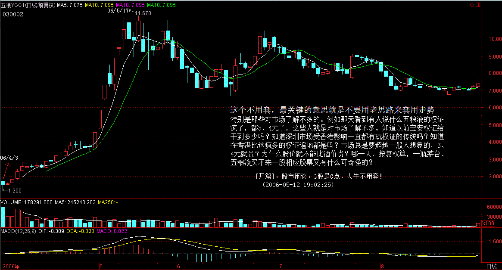
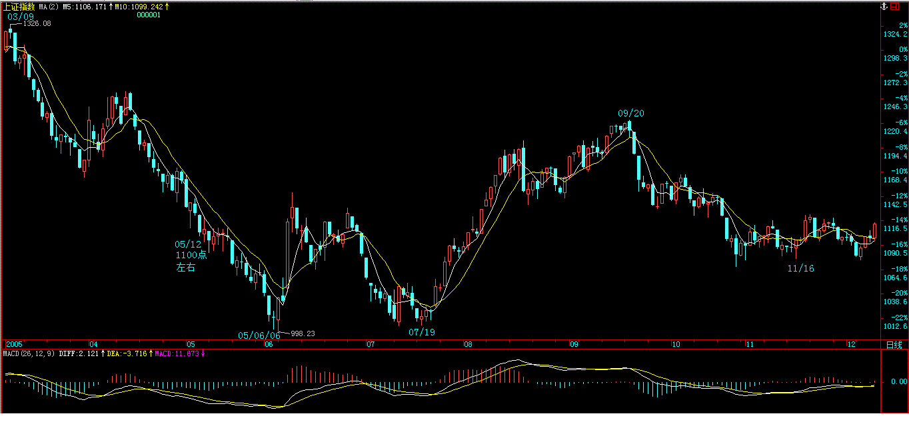
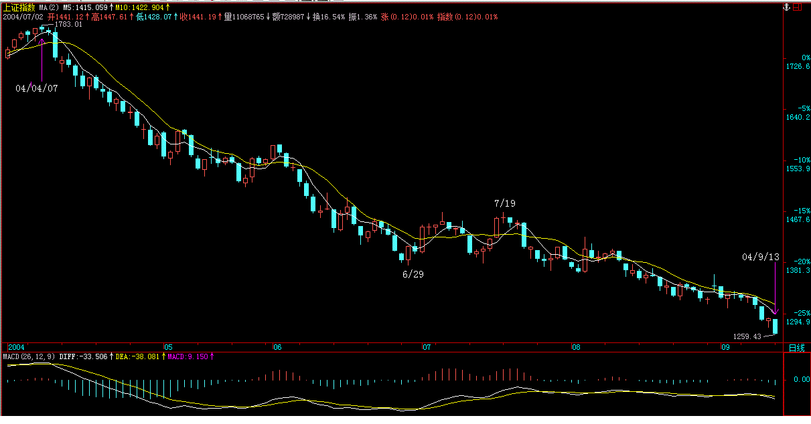
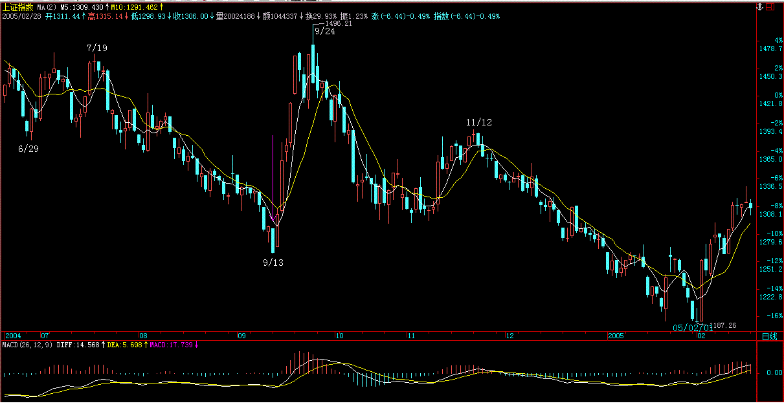
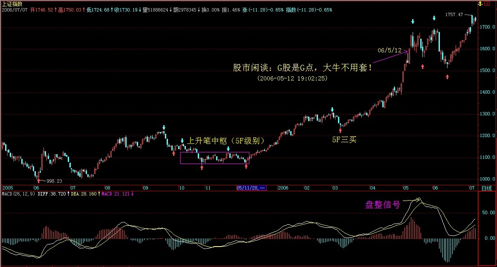

股市闲谈：G股是G点，大牛不用套！
原文网址：http://blog.sina.com.cn/s/blog_486e105c010003nt.html
(2006-05-12 19:02:25)
娇：G股是市场的兴奋点，大牛市开始，不能按照过去熊市老思路套用走势！
能和本ID聊股市的，如果有，最多就处在精子或卵子状态，连受精卵都算不上。而且股市游戏是靠干出来而不是说出来的，因此一般都不说。但看到有些人被这股市折腾得厉害，出于同情，又周末了，也就说两句。
一年前股市跌到1000点最腥风血雨时，当时看到很多人在网上很可怜，就用老ID给了一个明确的说法，叫“G股是G点”，越腥风血雨就机会越大了。现在这个G点已经弄得让很多人受不了，绝大多数在市场中的人都是很犯贱的，跌也怕，涨也怕，真是可怜。为此，今天再给一句话，叫“大牛不用套”。
这个不用套，最关键的意思就是不要用老思路来套用走势，特别是那些对市场了解不多的。例如那天看到有人说什么五粮液的权证疯了，都3、4元了，这些人就是对市场了解不多。知道以前宝安权证给干到多少吗？知道深圳市场受香港影响一直都有玩权证的传统吗？知道在香港比这疯多的权证遍地都是吗？市场总是要超越一般人想象的，3、4元就贵？为什么股价就不能比酒价贵？哪一天，按复权算，一瓶茅台、五粮液买不来一股相应股票又有什么可奇怪的？

当然，对于极少数的人来说，市场就是一个提款机，想提就提，这怎么才能办到？就是要对市场充分地了解，真了解市场的人，就知道市场都是一样的，就像穿着各种衣服的人，扒光了都一样。真明白市场的，就无所谓牛熊，市场永远都是提款机。当然，如果市场只能是单边的，那么唯一的区别就是在熊市中，投入的资金以及摆动频率要小。
不过，即使在牛市中，高手和低手之间的赢利程度也是区别很大的。一个股票如果上涨1倍，低手最终落袋的最多就是1倍，而高手搞出3、4倍来是一个很简单的事情。其实，股票投资十分简单，最关键的就是成本，而时机其实就是成本，如果你有本事能比市场的平均成本要低，就永远立于不败之地。既然波动是市场风险所在，那么相应地就提供了利用市场的风险，利用一切值得利用的波动把持有成本往0甚至负数干下去的机会，这样，无论牛熊，都无所谓了。有波动就有风险，相应就有利润，对于一个高手来说，只要有足够的时间，一个下跌股票弄出来的利润一定比一个低手在一个上涨股票弄出来的大，当然这只是举例，真正的高手当然不会故意逆着趋势干。
投资是一门艺术，而投资的艺术归根结底是资金管理的艺术，这就像歌唱的艺术，归根结底是呼吸的艺术一样。而市场的波动，归根结底是在前后两个高低点关系构成的一个完全分类中展开的，明白了这一点，市场就如同自己的掌纹一样举手可见了。以上这些，不但对于散户，对于庄家其实也是一样的，能明白这一点的，就可以在市场中游刃有余了。当然，这个境界还有向上一路，这就不是能对一般人说的，而且说了也白说，就不说了。
===
大盘走势：
  
[开篇]：股市闲谈：G股是G点，大牛不用套！(2006-05-12 19:02:25)
附二：LHY刘宏宇整理版
能和本ID聊股市的，如果有，最多就处在精子或卵子状态，连受精卵都算不上。而且股市游戏是靠干出来而不是说出来的，因此一般都不说。但看到有些人被这股市折腾得厉害，出于同情，又周末了，也就说两句。 一年前股市跌到1000点最腥风血雨时，当时看到很多人在网上很可怜，就用老ID给了一个明确的说法，叫“G股是G点”，越腥风血雨就机会越大了。现在这个G点已经弄得让很多人受不了，绝大多数在市场中的人都是很犯贱的，跌也怕，涨也怕，真是可怜。为此，今天再给一句话，叫“大牛不用套”。
这个不用套，最关键的意思就是不要用老思路来套用走势［LHY注：面对每一段现实的走势，都要把自己的心态“清零”，“过去心不可得”，过去成功的经验可能成为下一次操作的陷阱，过去失败的阴影可能成为下一次操作的障碍，不要在各种成见中迷失自己，要让自己的心“空”下来、“虚”下来］，特别是那些对市场了解不多的。例如那天看到有人说什么五粮液的权证疯了，都3、4元了，这些人就是对市场了解不多。知道以前宝安权证给干到多少吗？知道深圳市场受香港影响一直都有玩权证的传统吗？知道在香港比这疯多的权证遍地都是吗？市场总是要超越一般人想象的，3、4元就贵？为什么股价就不能比酒价贵？哪一天，按复权算，一瓶茅台、五粮液买不来一股相应股票又有什么可奇怪的？
当然，对于极少数的人来说，市场就是一个提款机，想提就提，这怎么才能办到？就是要对市场充分地了解，真了解市场的人，就知道市场都是一样的［LHY注：市场的“本质”都是一样的］，就像穿着各种衣服的人，扒光了都一样。真明白市场的，就无所谓牛熊，市场永远都是提款机。当然，如果市场只能是单边的，那么唯一的区别就是在熊市中，投入的资金以及摆动频率要小。 ［LHY注：所以，牛市、熊市中的操作策略要有区别，“真正的高手当然不会故意逆着趋势干”。］
不过，即使在牛市中，高手和低手之间的赢利程度也是区别很大的。一个股票如果上涨1倍，低手最终落袋的最多就是1倍，而高手搞出3、4倍来是一个很简单的事情。其实，股票投资十分简单，最关键的就是成本，而时机其实就是成本，如果你有本事能比市场的平均成本要低，就永远立于不败之地。既然波动是市场风险所在，那么相应地就提供了利用市场的风险，利用一切值得利用的波动把持有成本往0甚至负数干下去的机会，这样，无论牛熊，都无所谓了。有波动就有风险，相应就有利润，对于一个高手来说，只要有足够的时间，一个下跌股票弄出来的利润一定比一个低手在一个上涨股票弄出来的大，当然这只是举例，真正的高手当然不会故意逆着趋势干。 投资是一门艺术，而投资的艺术归根结底是资金管理的艺术，这就像歌唱的艺术，归根结底是呼吸的艺术一样。而市场的波动，归根结底是在前后两个高低点关系构成的一个完全分类中展开的[LHY注：“完全分类”是缠论的核心思想和分析方法，贯穿于缠论的始终]，明白了这一点，市场就如同自己的掌纹一样举手可见了。以上这些，不但对于散户，对于庄家其实也是一样的，能明白这一点的，就可以在市场中游刃有余了。当然，这个境界还有向上一路，这就不是能对一般人说的，而且说了也白说，就不说了。

［LHY：上面是当时上证指数的日线图，图中的一笔相当于一段5分钟级别走势，所以，图中划出了一个5分钟级别的中枢。 2006年5月12日，上证指数突破1600点，接近历史最高点位，“现在这个G点已经弄得让很多人受不了”，缠师在这个时候提出“大牛不用套”，揭示了这一波行情的大牛性质。 从图上可看到：MACD指标的黄白线创了新高，但没有背弛，随后的回调恰恰形成了本人在《感悟缠论(84)》中所提到的“盘整信号”——出现盘整信号后，走势开始进行“中枢震荡”，同时，MACD指标的黄白线向零轴回归，此时，是在次级别或以下级别弄短差的好时机。］
［LHY注：本人体会，股票投资的艺术有三个层次，按从低到高的顺序来看： 第三层是基本技术，包括技术分析和基本分析； 第二层是操作策略，这是与你所掌握的基本技术相适应、相配套的，具备纠错机制的一个“完全分类”的操作系统； 第一层是操作心态，这是在一定技术基础上、制定了完全分类的操作策略之后，以完全客观、平和的心态进行主动的机械化操作，买点买、卖点卖，见着拆着，这就要求我们在哲学和人生观上达到极高的意境。 所以，炒股也是修炼，炒股大师最终成了哲学大师。境界达到了，钱也就来了。不过，真正达到至高的境界，钱也就什么也不是了。］
评论、答疑精选
你的样子2007-02-04 13:04:23 这篇文章才应该是系列一吧？ “市场的波动，归根结底是在前后两个高低点关系构成的一个完全分类中展开的”，这句话应该是总体理论的原理。 原来后面教的是如何分类。 感觉好像悟到了什么。 简单2007-06-09 00:35:34 不明白.我看掌纹跟天书一样,看来发不了财了。 侵晨2007-08-16 23:00:01 了解市场的结构，利用市场的波动，进行资金的管理，降低持有的成本。 新浪网友2007-09-10 12:47:39 “股票投资十分简单，最关键的就是成本，而时机其实就是成本，如果你有本事能比市场的平均成本要低，就永远立于不败之地。既然波动是市场风险所在，那么相应地就提供了利用市场的风险，利用一切值得利用的波动把持有成本往0甚至负数干下去的机会，这样，无论牛熊，都无所谓了。” 好激动人心的文字呀，看来我这个刚入市几个月的绞肉机里的新肉，也有和伟大的博主一样的想法，我的股市命运应该不会太惨吧，也许……
附业中修禅的评论。 业中修禅：研读缠论日久，感受到缠论的博大精深，同时也感受到缠论原文中的一些叙述是不容易让读者理解的。 可以这么说，缠论是目前最好的股市技术分析理论？为什么是最好的，是因为缠论是唯一将技术分析理论建立在严密的公理化体系上的理论。这是一套几何理论（严格说来是一套拓扑理论），推理的严谨，思想的深邃是目前所有其他技术分析所不能及的。而且缠论不着相，不以某个或者某些具体的走势形态作为自己的理论基础，其理论基础是公理化的，是抽象的，而非直观的，以禅宗的语言来说，你的立论基础必须是性空，而不能是缘。所有的图形皆缘，也就是业。 然而，毋庸置疑，缠论不是一部经过反复校稿的书籍，因此很多阐述上前后有一定不一致处，这些不一致并不是缠论本身的问题，就像微分方程，如果初始点选的不一样，使得解的形式不一样，能是解的问题么？当然不是。但是这些不一致会极大的耗费学习者的心神。试举一例：对于第二类买点是否会低于前面第一类买点的问题，文章中的论述和答疑时就有矛盾之处，刚开始缠中说禅是不赞同第二类买点低于第一类买点的，后来又否认了，认为第二类买点可能是会低于第一类买点的。然而，缠论的精髓是股票理论中以“存在性”表现出来的“必然性”，至于比较某两个点的一定的高低，都不是必然的。缠师在写这两篇原文时，由于不同的市场环境，使得给出的判断前后相左。 禅宗（《金刚经》）云：“佛告须菩提：‘诸菩萨摩诃萨应如是降伏其心！所有一切众生之类：若卵生、若胎生、若湿生、若化生；若有色、若无色；若有想、若无想、若非有想非无想，我皆令入无余涅槃而灭度之。” 如果以缠论为的佛教中的“空”，那么每一段走势就是“相”。如何破解一切相而去掌握内在的空，是需要花大时间的。以禅宗之意，点评注释缠论，就显得尤为重要了。 注：本篇序是市场学生给出的，有一定的深度。因此这里也对其解一解。
掌握缠师理论的二种方法及一个关键
原文网址：http://chzhshch.net/czsc-10974-1-1.html
说实在的，这个题目对于自己目前的水平实在是太大了，没办法，为了抛砖引玉，只好勉为其难，胡说几句。 一般地要掌握一个高深的理论有两种方法，借用中国古代文化的一个术语，就是“自明诚”与“自诚明”。我所谓的自明诚，就是指因为明白其理，然后坚定相信它的功用至之融为一体；而自诚明则是指因坚信其一定正确而坚持研究下去，最终大彻大悟。 运用到缠师理论的学习掌握上，自明诚一派多是指对股票理论有一种穷究其道之瘾，各家各派无不涉猎之人。其中喜好研究市场结构、市场能量、股价轨迹者（这三点正好指代形态学和动力学）会对缠师理论一见倾心，他们会对老师的理论视若至宝，但有时因其内心的正人君子意象而对老师的419一类术语产生反感（其实就是犯了“慢”的问题，总把自己当成正人君子）；或者因追求确定之道而无法接受老师彻底的顺势而为交易理念（彻底顺势而为是什么意思，就是心中无住念，前一刻看多的，后一刻完全可以看空，买错了敢于割，买错了敢于补，也就是缠师在第四讲中所说的风险一旦过去，就不能再想着风险）而放弃，或者为老师的几何语言所扰而无法深入下去，最终均无缘习得！
欲从明诚一路掌握缠师理论，一个重要方法是增强其诚的一面，不然会因为心中时时生出的疑问而打消继续学下去的信心。如老师是随笔而写，不会那么有条理，前后互相矛盾，如此下去，最终会因为越来越多的问题而觉得不过如此不如放弃。这时候我们要增加一点诚意，反问自己是否真正明白老师所言所指？要坚信以老师那么高的天份，如果其体系不完整，那么不可能从无到现在赚取数以亿计的财富！从老师看似随手拈来的文字与章法，要明白老师是在因材施教，随缘而化。设想一下，如果老师一开始就把最彻底的笔、线段用严格的几何论述全盘摆出，那么我相信大多数早就被吓跑了。细察起来，老师以八封故事开始，以“色”诱之，以利导之，以均线之吻引出各买卖点，拾级而上，不觉轻舟已过万重山！我们要不断地弃之，不仅包括过去的各种炒股理念，还有老师因材施教的各种说法，更包括人性的贪嗔痴疑慢！
业中修禅：“自明诚”的研究方法比较适合在学校里面做过学问的人，这类人的特点是，凡事希望弄个究竟，保持着对于真理的不懈求索，此类人，喜欢独立思考，不太喜欢人云亦云，优点是思维深度比较好，比较有自信；缺点是认死理，面子也不够厚（可能是这类人一般学习都比较好，从小容易受表扬的缘故吧），可以说，这类人的优点就是这类人的缺点，遵照禅宗里面的想法是，这类情况会着一相：自尊心。自尊心本质上是“自我”的一种体现，犯了“贪嗔痴疑慢”中疑和慢的问题，对外界“疑”，对自己“慢”，也就是傲慢。然而在资本市场中经过市场的屡次抽耳光式的打击，自尊心大受伤害，因此逐渐心灰意冷，难以习得缠论精髓。因此缠师才说，此类人需要从“诚”的角度去多用功，因为这类人“明”的一面是足够的，有自己的独立思考钻研能力和兴趣，缺少的是“诚”的一面，试想，一个极有自尊的人内心也往往比较自我，比较自视甚高，同样也往往非常重视自己的心里感受，这类人是很难对自己之外的东西“诚”的，因此“诚”对这类人来说就由其显得重要了。
当我们抬头看见月亮的时候，就不要再想着老师指向月亮的“金手指”了！
缠师说缠论能够解释一切股票理论（为什么能够解释一切股票理论，因为其非理论，以非理论而解理论，岂不痛快哉），学得越多越能体会到其伟大。凡事一分为二，如果从排斥的角度看，既然其它理论也能达到看起来差不多的结果，那么何必费那么大劲研究这种难懂的几何股票理论？从赞赏拥护的角度看，一个一以贯之的完美理论不是更值得我们努力研究吗？因此增强诚的一面是十分必要的。同时按缠师的说法，一旦你真的掌握缠论以后，并不废万法，如盘口理论、周期理论、神奇数字、小道消息等等，会使你如虎添翼！
观千剑然后识器。（禅宗，破一切之相，才能得相之后的空，获法身。注意，此一切相也包括缠论这个相，也要破缠论这个相）欲从明诚一路掌握缠师理论，更重要的是从明上加强，真正明白缠师理论，自然会体悟到其理之真，这里就要有针对性地采取相应的方法，从全新的视角研究缠师理论的出发点、着眼点，按照一个完整的交易系统所涉及的参与者、市场、交易理念、交易过程、资金管理五个方面一一分析缠师理论，有针对性地比较各方面与各家各派的异同（破一切各家各派的招数才能看到如来法身，才能了却生死，获般若智慧），从中体会到老师所说的更精确之义，体会到老师理论一以贯之圆融无碍之美！在当今这个几何即物理、结构即能量、物质即能量的时代，有时不求甚解是一个好的学习习惯，你可以走马观花地看一下老师博客中的数学部分，看看是否明白点什么。要善于从老师的只言片语中窥测老师整个庞大的思想理论体系。在股票方面，最终要真正体悟到走势终完美这一最高原理！（缠师在某一答疑中说过，走势终完美的本质是走势必然要形成中枢，谁能推导出这两个命题的等价性呢？哈哈，去尝试尝试证明命题的充分必要性吧）伟哉，在当下已完成的市场结构合力与当下多空双方合力的共同作用下，一个“终”字把股价走势向前延续的时间特性发挥（缠师已经点出了要害，时间！时间特性才是缠论的根本特性）得无与伦比，从静态的分级结构变成了动态的生命成长过程。生成驻灭，一级级的结构在时间的延续下从下向上不断地传递，不断地完成，永远在完成，永远也没有完成！生命在其中！
如果你继续关注到老师的文史哲经，那么会发现股票理论在老师几何物理之道中不过是一个例证而之，这时居高临下，会对股票理论有一个更高的认识，也会明白老师为何会出现在你的视野中，明白缘为何物（缘即为业，因缘即因业，你所有本世和前世的经历让你和缠师有缘，能如此深入的阅读思考下去）更会敬畏生命！（本段根源就是禅宗，终生平等，皆为幻灭，皆为空之化生，必体现空，必归于空，色即是空）
从诚明一路入手，是指由于天生的缘分或其它原因而对老师的理论一见如故，坚定而毫不动摇地学下去，遇到问题，只是不断地反思自己做错了哪里，是否理解错误，绝不怀疑老师理论的正确性（缠师的理论是存在性，自然是不会错的），坚信读书百遍其义自现的信念，最终机缘凑和而得以开悟。
业中修禅:对于那些需要从“自诚明”的角度来学习的人是另一种情况。一般来说，这类人学校科班出身的人较少，有了信仰会不加思索的相信，这样好的一面是如果跟对了人，忠心可嘉，由于诚，自然百折不挠，被市场的耳光抽了多次依然无怨无悔。而这又是习得缠论的最可靠的精神力量，以诚而成。但最大的弱点就是由于自己一直相信所听到看到的，因此很少对新问题抱有怀疑的态度，这样“明”的方面比较少。这类人一般独立思考性少一些，比较容易相信人。好，现在我们反思一下，同时缠师也说了，到底“诚”是对什么“诚”？不要因为是缠中说禅或者“亿安科技李彪”这种名号才对此诚，如果因此而诚，那又犯了“痴”的毛病了。别人是牛你就一定要诚么？很可能别人就是利用你对他的信任来诱骗你呢，被人卖了还在替人数钱。如果这样那么人也着了一相：自卑心。对牛人俯首称臣，言听计从。这也是违背禅宗之意的。禅宗讲究众生平等，人人皆有佛性，人人是佛，别憋屈了自己，把自己看卑微了，一样无法习得缠论。
从此路入手，不要在小的细节上过多纠缠，要从大的方面着眼，反复通读课文，掌握其大意，居高临下，掌握全貌再一一深究细节。同时对老师的每日解盘一一研究，那是其理论的实际运用，假以时日，终会心诚则灵，功到自然成，！
一般地，我认为＜教你炒股票＞至少要读三遍方能知其大意。前二遍不必过于想完全弄懂，可以把问题记下，取得一个总体印象后开始仔细的第三遍阅读，同时到论坛中寻找相关答案。只有这样才能事半功倍。第四遍开始，我们要对教材的范围重新定位。目前大家只把教你炒股票系列作为教材，却不知还有更广的范围。请记住，缠师并不是仅仅靠大家所知道的笔、线段、中枢、级别几个概念来叱咤资本市场的。
如果你想成为一个真正的缠论高手或者缠师所说的钢铁战士，那么要把教材的概念放大一些。一套完整的教材应该是由教你炒股票、股市杂论与每日解盘、缠师在留言中答疑的贴子三部分组成。在目前无法直接向缠师请教的情况下，大家可以从缠师的每日解盘中学到如何观察市场及灵活制定交易策略的知识，是活生生的教科书；而缠师在回复中的答疑更是第一手资料，初学者在学习中可能遇到的问题早就被人提问过，缠师也做出了明确的解答。从这二个珍贵的宝藏中，我们完全可以找到困惑我们许久的问题答案！ 学习时应按照时间顺序同时阅读这三部分内容，打开股票软件历史走势，细心体会缠师的解说，全面地、客观地、辩证地掌握其理论！当然这个学习量是巨大的，这也正是验证每个人与缠论缘份的试金石，付出多少就会得到多少！
向上一步，继续扩大教材的范围，就是市场与人生一体，把论语纳入教材范围内，并由儒入禅，提升自己生命的层级，正如缠师所说：在当代社会，不了解资本市场的，根本没有资格生存，而陷在资本市场，只能是一种机械化的生存。当代社会，资本主义社会，无论有多少可以被诟病的，但却构成了当下唯一现实的生存（存在性，是所有哲学的最原始起点，可以去看看哲学史）。当然，你可以反抗这种生存，但所有的反抗，最终都将资本主义化，就如同道德资本、权力资本的游戏之于资本的游戏一般。了解、参与资本市场，除了以此兜住那天上的馅饼等小算计外，更因为这资本、这资本市场是人类当下的命运（人类目前发展的当前最高等的阶段就是资本化的存在方式，是人类发展的当前存在方式，也是必然会死亡的一种存在方式，将会有更高等级的存在方式替代她），人类所有贪嗔痴疑慢都在此聚集，不与此自由，何谈自由？不与此解脱，何谈解脱？自由不是逃避、解脱更不是逃避，（自由是自己和规则的无缝的融合，你能意识到你是自由的，非自由，你意识到无所自由而自由，不知自由在何处，才是真自由）只有在五浊恶世才有大自由、大解脱，只有在这五浊恶世中最恶浊之处才有大自由、大解脱。投资市场最终比的是修养与人格及见识，光从技艺上着手，永远只能是匠人，不可能成为真正的高手。古代有所谓的打禅七，在现代社会，能找到7天来打禅七是极其奢侈的事情了。但每周，有一个小时，抛开一切束缚，抛开一切人群，独自一个人，在房间里、在高山上、在河流里、在星空下、在山野的空谷回音中，张开没有眼睛的眼睛、没有耳朵的耳朵、俯视这世界、倾听这世界。其实，何处不是房间、高山、河流、星空、山野？何处有束缚需要抛开？在资本、政治、淫乱贪婪、恐惧的血盆大口里，就是自由、解脱的清凉之地（透过所有的相，看见背后的空）。当然，如果没有如此见识，还是先去需要自己的房间、高山、河流、星空、山野，但最终，依然要在五浊恶世中污之恶之，不如此，无以自由、解脱。 本ID的理论就如同欧几里德几何，只要学会了，任何人应用都是一样的，所以该尊重的是理论本身，而不是本ID，本ID也不能违背该理论，就像牛顿发现了万有引力，但依然在万有引力之中。所以有信心的是理论本身，而对理论的信心来自对其逻辑结构的充分理解，进而在实践中不断校对其理解，这样才真的变成自己的。